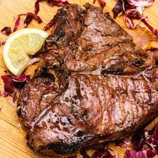

Bistecca alla Fiorentina (Tuscan Porterhouse)

Description
This flagship, Tuscan steak is made from the region's Chianina breed of cattle which are prized for their tenderness and flavor. In typical Italian style, simplicity rules the day; little more than olive oil, rosemary, and salt are needed to highlight the rich flavor of the grilled meat. With Italian food, freshness and quality are top priority, so I use nothing less than choice porterhouse, and much prefer prime!
Ingredients
- 4 sprigs fresh rosemary, chopped
- 1 (2 ½ pound) choice or prime porterhouse steak
- 3 tablespoons Tuscan olive oil
- Moist, grey sea salt and freshly cracked pepper to taste
- 6 lemon wedges
Steps:
-
Press chopped rosemary onto both sides of porterhouse steak; set onto a plate and allow to marinate at room temperature for 1 hour.
-
Start an outdoor grill using hardwood charcoal, such as hickory. When coals are white and glowing, arrange for high heat.
-
Gently brush or rub olive oil onto steak, then season to taste with sea salt and pepper.
-
Place steak onto grill, and cook until a dark, golden brown (not burnt) crust forms, 5 to 10 minutes depending on thickness of meat. Turn over, and continue cooking until golden on the other side, 5 to 10 minutes more. When finished, place steak onto a platter, and allow to rest for 10 minutes.
-
To serve, remove the two pieces of meat from the bone, and replace the bone onto the serving platter. Trim any unwanted fat from the round (tenderloin) steak, slice into 6 equal pieces at an angle to the grain, and fan out on one side of the bone. Slice the rectangular (loin) steak into 1/4-inch slices at an angle to the grain. Fan out on the other side of the bone. Finish by garnishing the platter with lemon wedges and a sprinkle of additional sea salt.